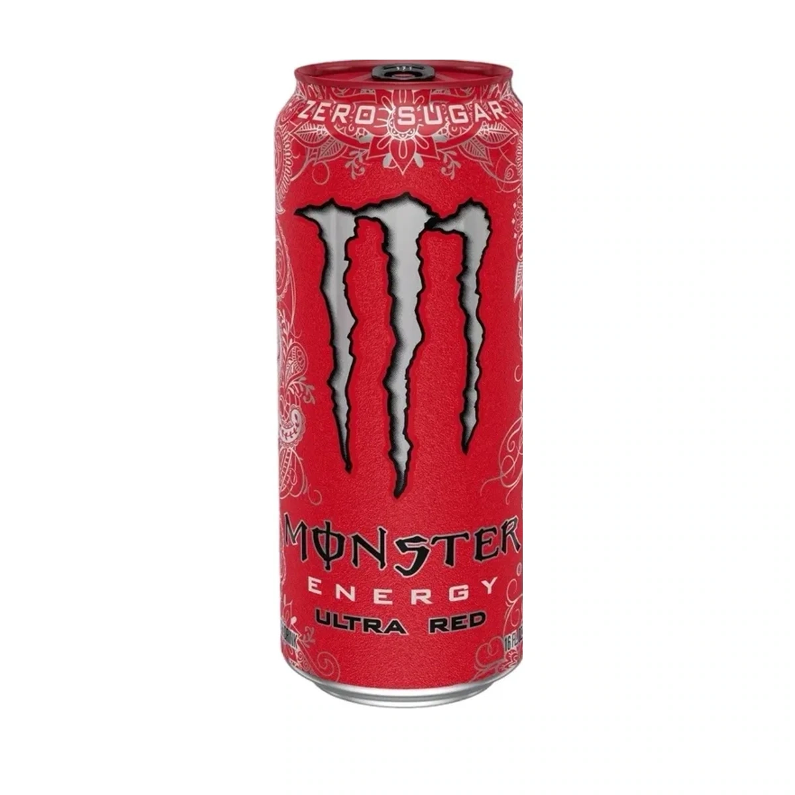
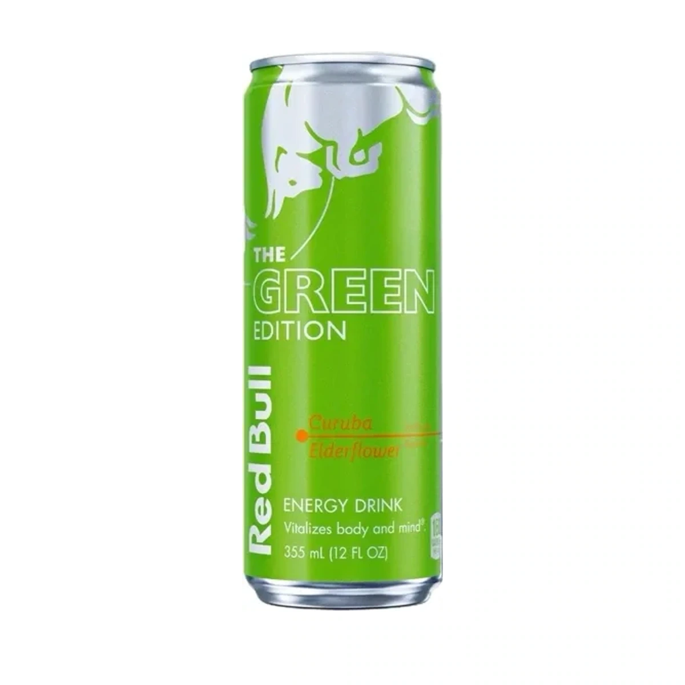
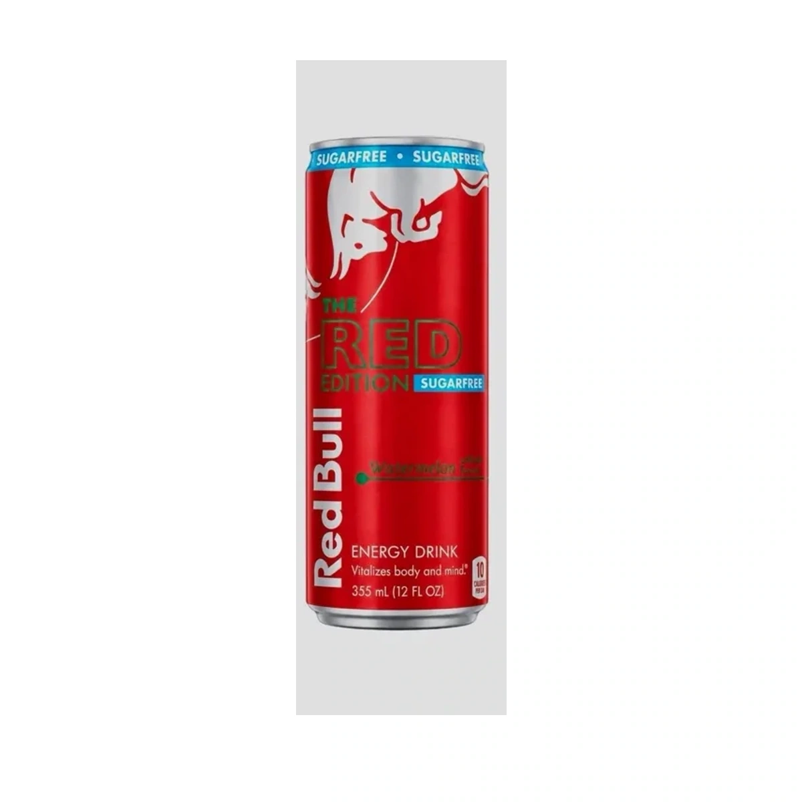
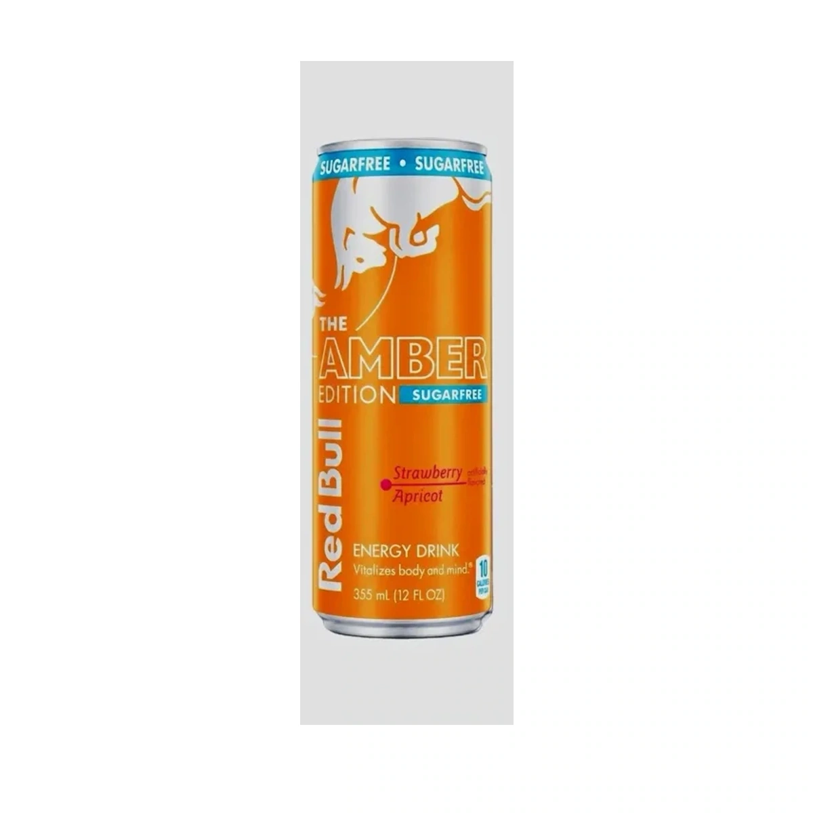
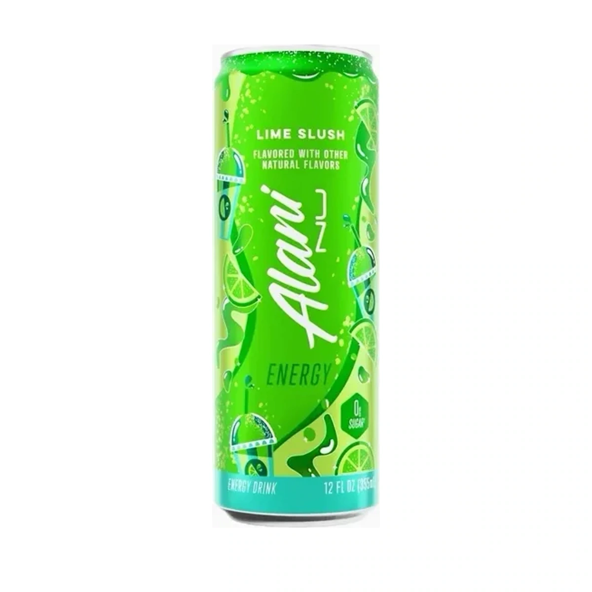
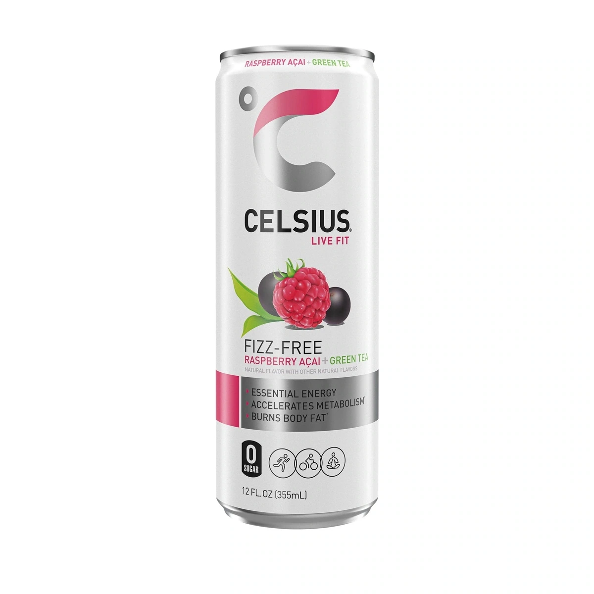
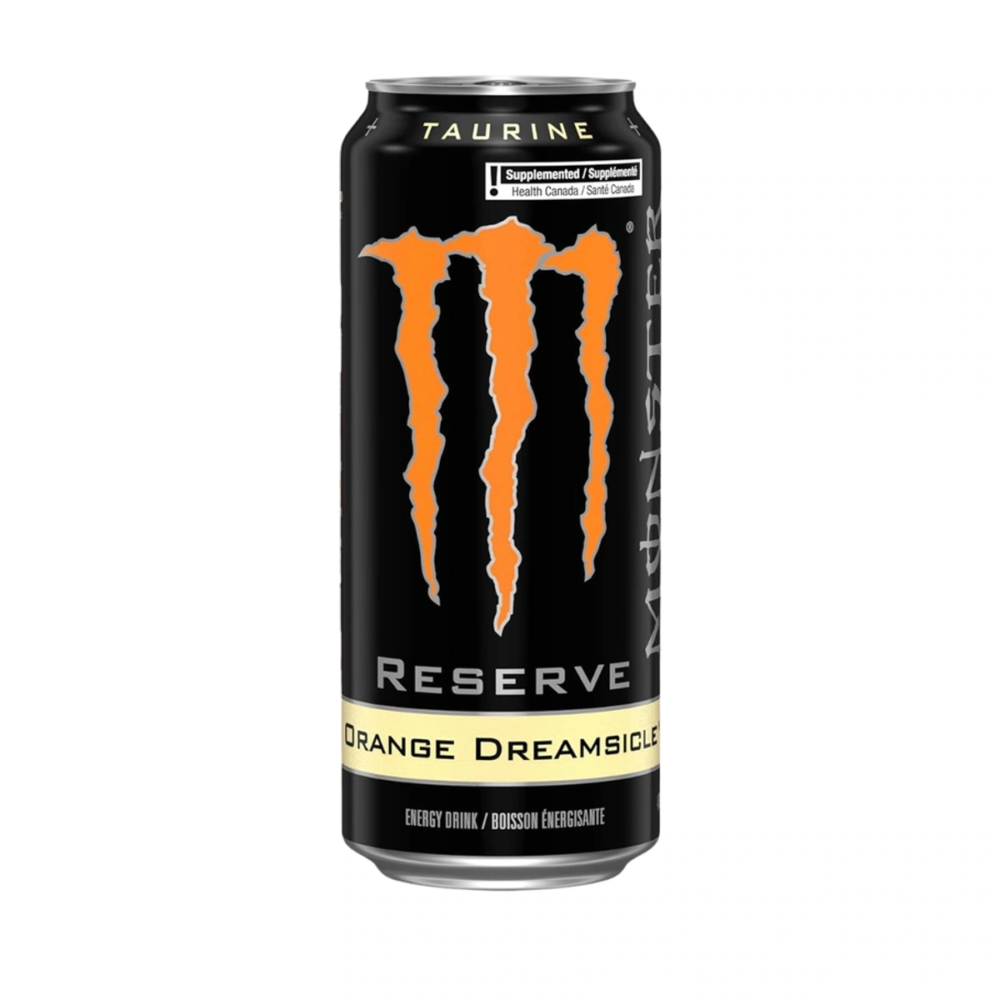
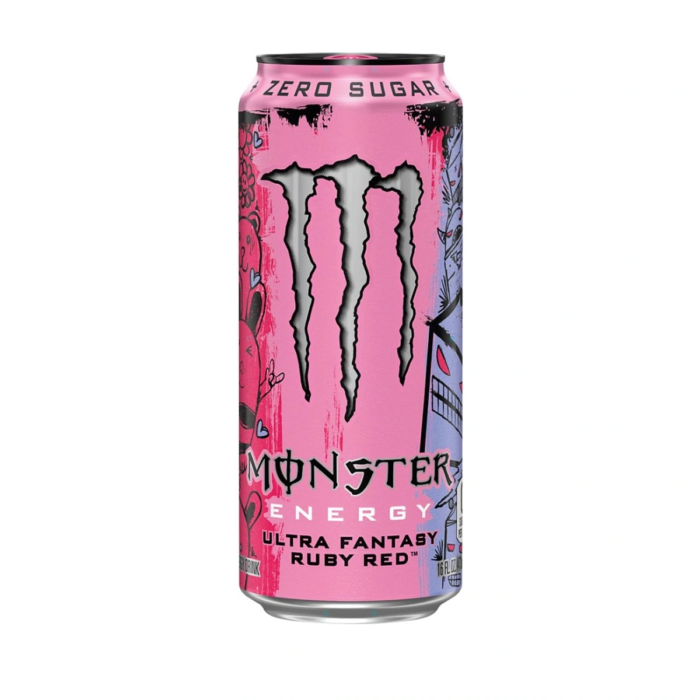
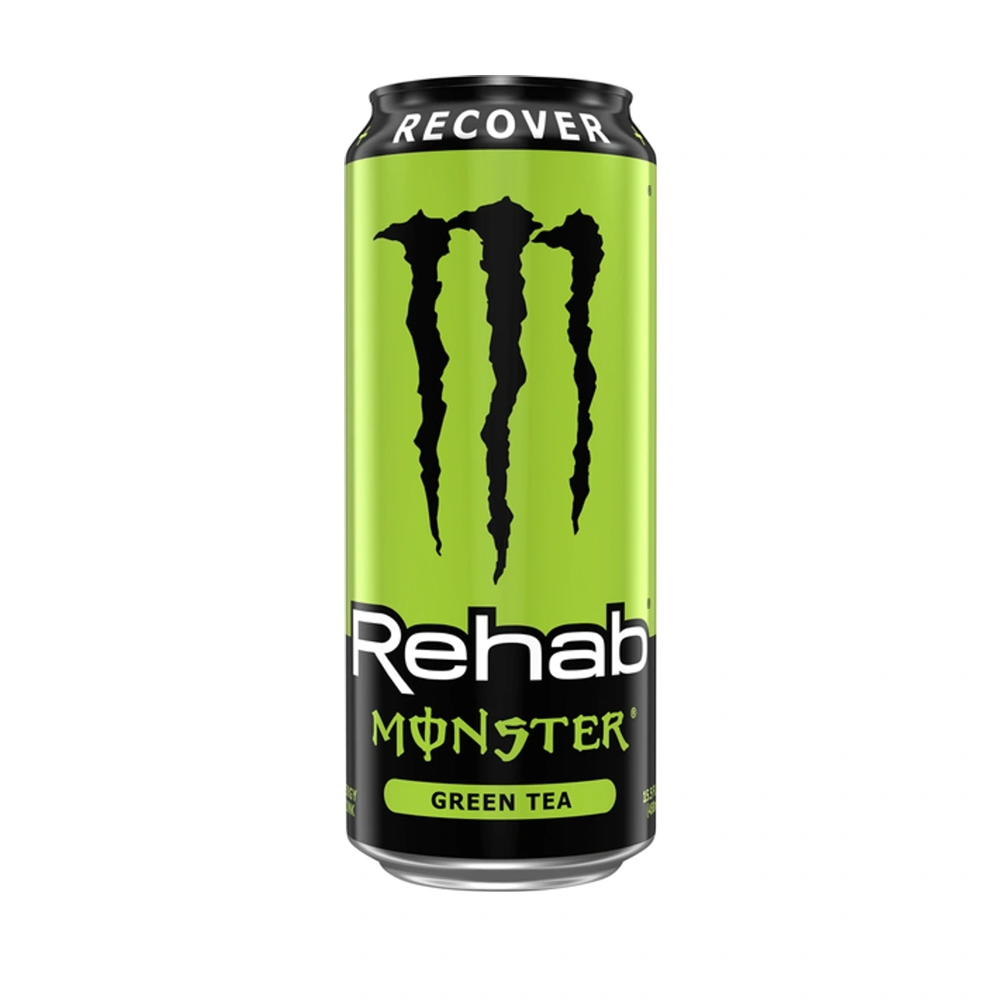
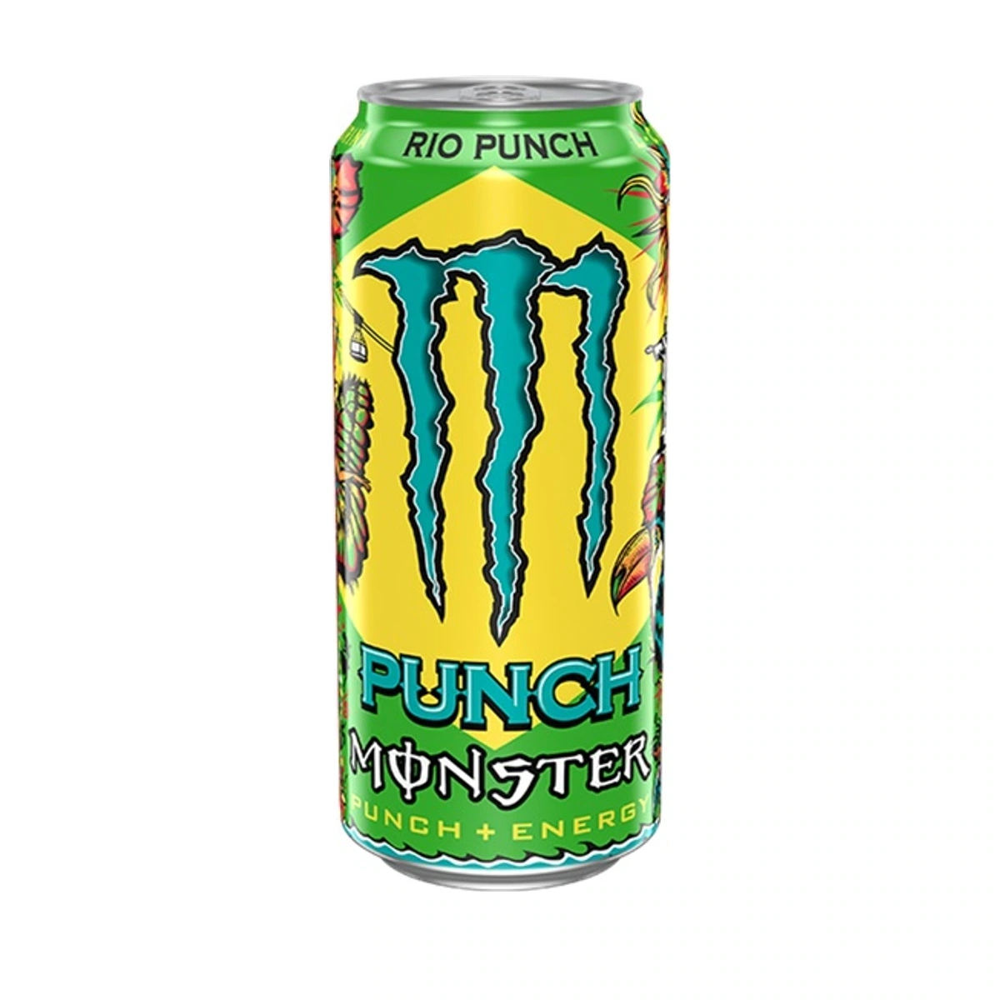

Is Red Bull Blue Edition Blueberry discontinued?
Yes. The original blueberry edition left Red Bull’s U.S. lineup in 2026, although foreign-market cans can still appear online.
One place to check confirmed U.S. flavor exits, retired versions, and credible rumors without treating every empty shelf as proof.
A flavor can vanish for several reasons: a national discontinuation, a regional distribution change, a limited release ending, a reformulation, or a package redesign. Search results often collapse those situations into the same answer. This index keeps the labels separate and links every conclusion to a full report with dated sources and a plain-English evidence grade.
The current 2026 index covers confirmed or distribution-supported exits from Red Bull, Monster Energy, Alani Nu, and CELSIUS, plus a Monster format change and three active rumor-watch reports. The list grows in researched batches. It is not padded with unsourced social posts, and a flavor is not called discontinued simply because one retailer is out of stock.
Yes. The original blueberry edition left Red Bull’s U.S. lineup in 2026, although foreign-market cans can still appear online.
A major U.S. retailer reset placed Ultra Watermelon among Monster’s 2026 cuts, even while old catalog pages remain online.
The creamy, full-sugar peach Reserve flavor was removed in the 2026 reset and has no direct replacement.

Ultra Red is discontinued in normal U.S. distribution, but stale brand pages, isolated restocks, and imports keep the question confusing.

The green curuba-and-elderflower Edition was removed from normal U.S. distribution in the 2026 range reset.

The sugarfree watermelon variant ended in the U.S.; the regular Red Edition is a separate current drink.

The sugarfree Amber Edition was cut in 2026 even though regular Strawberry Apricot remains in Red Bull’s U.S. range.

The bright green limited release ended after its 2026 U.S. run; remaining packs are sell-through inventory.

The 2026 Fizz-Free refresh kept Peach Mango but left Raspberry Acai Green Tea out of the current U.S. lineup.

The black Reserve can and its formula ended, but Monster relaunched Orange Dreamsicle outside the Reserve line.

A reported corporate email names October 1, but Monster still lists Ruby Red. The rumor is credible enough to watch, not confirm.

A specific report names Rehab Green Tea for October 1, while Monster’s official page still treats it as current.

Rio Punch appears in the same October rumor as Ruby Red and Green Tea, but public Monster sources still list it.
Discontinued Club checks official U.S. product catalogs first, then looks for dated brand statements, distributor notices, retailer resets, and broad changes in availability. A single empty shelf, a marketplace listing, or an old product page is not enough by itself.
International production is still useful context. It can explain why a flavor appears in search results or can be imported after American distribution ends. For this index, however, a product that is no longer sold through normal U.S. channels is treated as discontinued in the United States.
Remaining inventory does not reverse a discontinuation. Retailers and collectors can sell sealed stock long after a product leaves production. Product pages linked from these reports show the exact item offered by Discontinued Club rather than a generic replacement photo.
It means the exact flavor or version is no longer in normal United States marketing and distribution. Foreign availability and leftover inventory are documented separately.
No. Brand and retailer pages can remain online after distribution ends, so current catalogs and dated distribution evidence are weighed together.
People search before brands make announcements. Rumors are useful when clearly labeled, sourced, and kept separate from confirmed discontinuations.